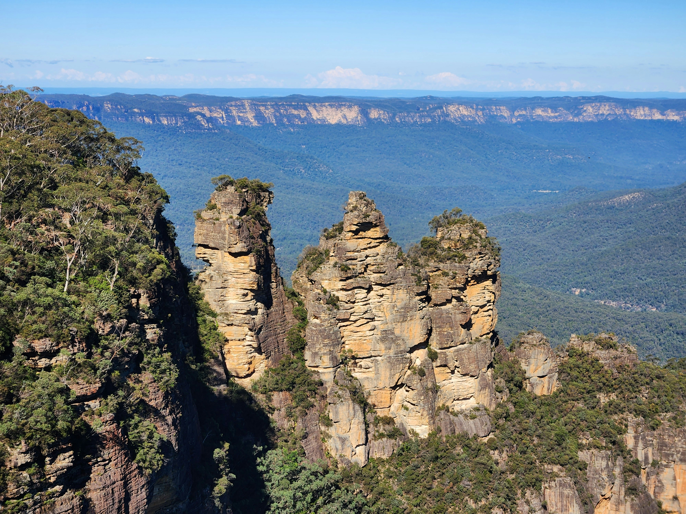
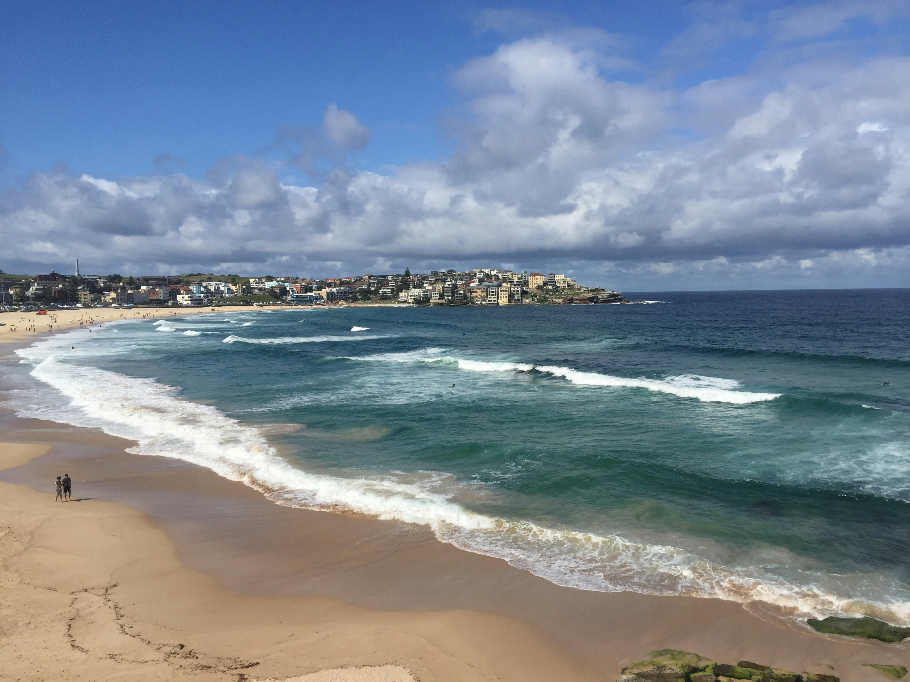

---
# Copyright 2024 seL4 Project a Series of LF Projects, LLC.
# SPDX-License-Identifier: CC-BY-SA-4.0
title: Summit program
---
seL4 Summit 2024
Sydney, Australia
15-17 October 2024
Social Activities
A number of informal social activities are being organised by local Sydney-siders. Check out the list and contact the organiser to register your interest.
This list is in chronological order. Note that some activities require advanced bookings, by 20 September 2024.
Blue Mountains bush walk (TBC)

Gernot plans to take a group on a walk, most likely in the stunning Blue Mountains, which are about a 1.5 hours drive from Sydney. The details of this activity will be organised mid-September 2024. Stay tuned!
When: Weekend of 12 & 13 October 2024 (Date TBC)
Contact: Gernot Heiser
Bondi to Coogee walk

June will take a group on the iconic Bondi to Coogee walk, with optional dinner to follow at Coogee for people who are interested.
When: Monday 14 Oct 2024, starting at 3:30pm
Where: Bondi Beach
Cost: Free, with the option of buying dinner at Coogee
Bring:
- Hat
- Sunscreen
- Water bottle
- Umbrella or raincoat (depending on weather)
- Swimmers and towel (optional, if you want to have a swim at Bondi before 3:30pm, or at Coogee on arrival)
Contact: June Andronick
A guided tour of The Rocks

Birg will organise a guided tour of The Rocks, which gives an account of Sydney's colonial heritage.
Bookings are required by 30 September 2024. Min group size 12. Max group size 20.
When: Monday 14 Oct 2024, meet at 3:15pm, tour 3:30-5pm
Where: The Rocks Walking Tours
Cost: $35 AUD per person
Bring:
- Hat
- Sunscreen
- Water bottle
- Umbrella or raincoat (depending on weather)
Contact: Birgit Brecknell
Sailing in Sydney Harbour (TBC)

Peter plans to take a group sailing in the Sydney Harbour on a replica of the 1600s ship, the Duyfken. Includes light refreshments, beer, soft drinks etc.
Please note that this is a rare and special experience, so bookings will need to be made by 20 September 2024. Please contact Peter Chubb for further details, including how to make your booking. There may be a discount for a group booking of more than 16 people. Max 24 people.
Peter is waiting for confirmation on the availability of the Duyfken and will know by 7 Sep. If sailing cannot happen, Peter will lead a tour of the maritime museum and its vessels (including the submarine), at a cost of $25 AUD pp.
When: Saturday 19 Oct 2024 (TBC), 2:30pm - 5:30pm
Where: Australian National Maritime Museum
Cost: $120 AUD per person
Bring:
- clothes suitable for the weather, noting it can get cold and wet, there's no shelter aboard
Contact: Peter Chubb.